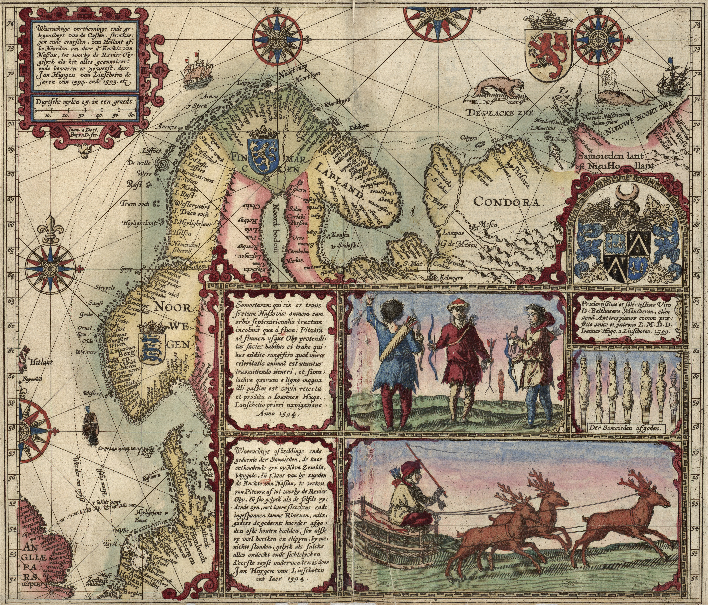
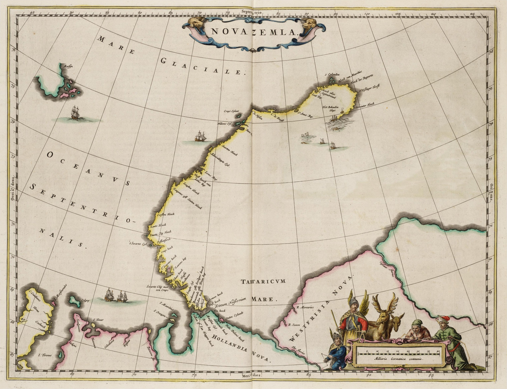
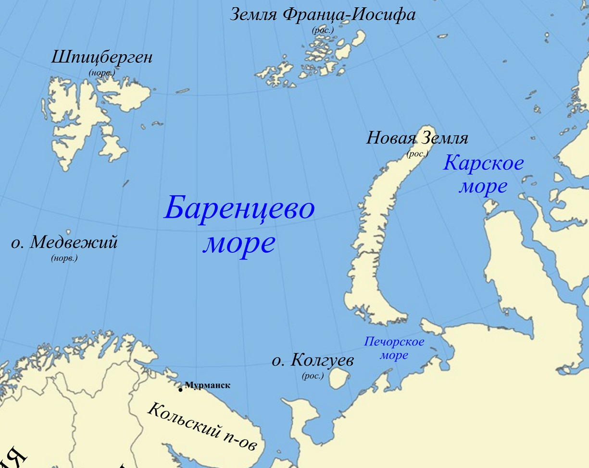
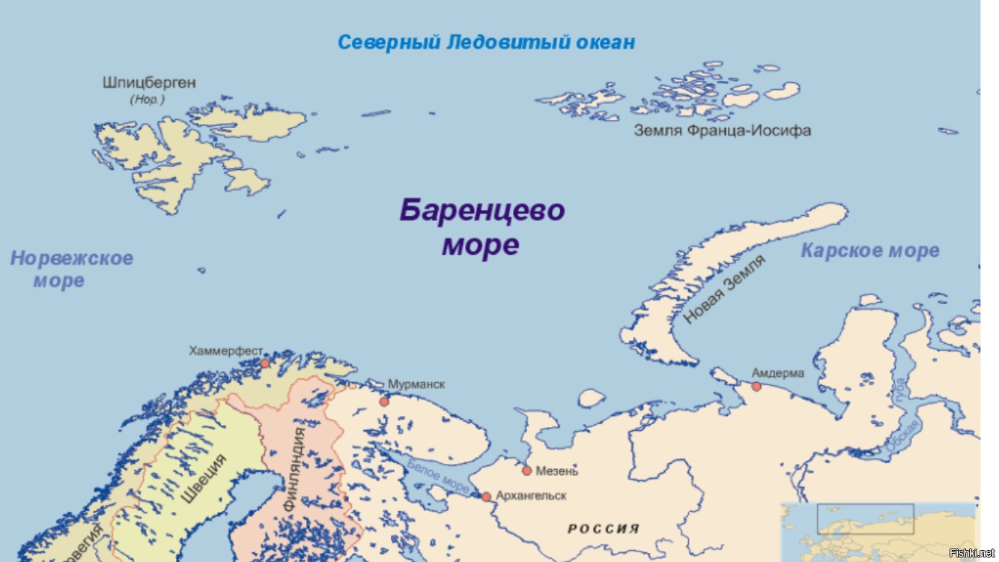

«Жизнь как коробка шоколадных конфет — никогда не знаешь, что тебе попадётся»
из фильма «Форрест Гамп»
(1550, остров Терсхеллинг, Испанские Нидерланды — 20 июня 1597, в районе Новой Земли) — голландский мореплаватель и исследователь. Руководитель трёх арктических экспедиций, целью которых был поиск северного морского пути в Ост-Индию. Умер от цинги во время последней из них в районе Новой Земли.
Картограф по специальности, Баренц совместно с Петером Планциусом издал атлас Средиземноморья, ставший результатом его плавания по этому региону. Основной причиной, побудившей Нидерланды заняться поисками северного морского пути в конце XVI века, являлось господство Испании и Португалии, полностью контролировавших дорогу специй вдоль побережья Индии в эпоху Великих географических открытий.
Участники экспедиции Баренца во время зимовки впервые наблюдали оптическое явление, позже названное Эффект Новой Земли по месту его наблюдения. Геррит де Веер вёл дневник экспедиции, где помимо этого явления впервые описаны симптомы гипервитаминоза А, вызванного употреблением в пищу печени белого медведя.
Экспедиция Баренца 1596—1597 годов стала последней голландской попыткой поиска северного пути в Азию.
Карта первой экспедиции Баренца, составленная ван Линсхотеном 1601 г.

Новая Земля в атласе ван Лоона, 1664 г.
Cовременная карта
